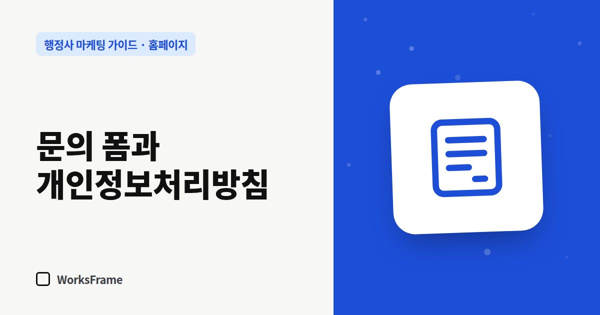

홈페이지
문의 폼과 개인정보처리방침 — 행정사 홈페이지 필수 체크리스트
한 줄 답
문의 폼으로 이름·연락처를 받으면 개인정보처리방침을 공개해야 합니다. 주민등록번호·여권번호·사건 내용은 폼으로 받지 마세요.

문의 폼은 고객이 가장 마지막에 만나는 곳이자, 사무소가 개인정보를 처음 받는 곳입니다. 편하게 만들되 받지 말아야 할 것은 받지 않게 설계해야 합니다.
법률 자문이 아닌 실무 체크리스트입니다. 구체적인 판단은 개인정보보호위원회 안내나 전문가 확인을 권합니다.
개인정보처리방침은 공개해야 합니다
개인정보 보호법은 개인정보를 처리하는 자가 개인정보처리방침을 정하고 공개하도록 하고 있습니다(제30조). 홈페이지 하단에 링크를 두고, 문의 폼 동의 문구 옆에도 연결하세요. 방침에는 보통 이런 내용이 들어갑니다.
- 받는 항목 (이름, 연락처, 문의 내용 등)
- 쓰는 목적 (문의 응대)
- 보관 기간과 파기 방법
- 문의·삭제 요청 방법
폼에서 받지 말아야 할 것
| 받지 말 것 | 이유 |
|---|---|
| 주민등록번호 | 법령상 근거가 있는 경우 등이 아니면 처리가 제한됩니다(제24조의2) |
| 여권번호·외국인등록번호 | 고유식별정보로, 따로 엄격한 요건이 있습니다(제24조) |
| 사건 경위 상세, 병력 등 | 상담 전 단계에선 필요 없고, 유출 시 피해가 큽니다 |
문의 폼 안내에 “사건 내용이나 신분증 번호는 적지 말아 주세요”라고 적어 두세요. 필요한 서류는 상담 후 안전한 방법으로 받으면 됩니다.
폼 설계 체크리스트
- 칸은 이름(또는 사무소명), 연락처, 업무 선택, 짧은 내용이면 충분
- 동의 체크박스 + 개인정보처리방침 링크
- 제출 후 “접수했습니다, ○일 안에 연락드립니다” 안내
- 스팸 방지 장치
- 접수 알림이 휴대폰으로 바로 오는지 테스트
받은 문의는 이렇게 관리
- 알림 메일·문자에도 필요한 최소 정보만
- 상담이 끝났거나 수임하지 않은 문의는 방침에 적은 대로 파기
- 공용 컴퓨터·개인 메신저에 쌓아 두지 않기
자주 묻는 질문
카톡 상담만 받으면 개인정보처리방침이 필요 없나요?
홈페이지에서 개인정보를 받지 않더라도 사무소 업무 전반에서 개인정보를 다루므로 방침을 갖춰 두는 편이 좋습니다. 적용 범위는 공식 안내를 확인하세요.